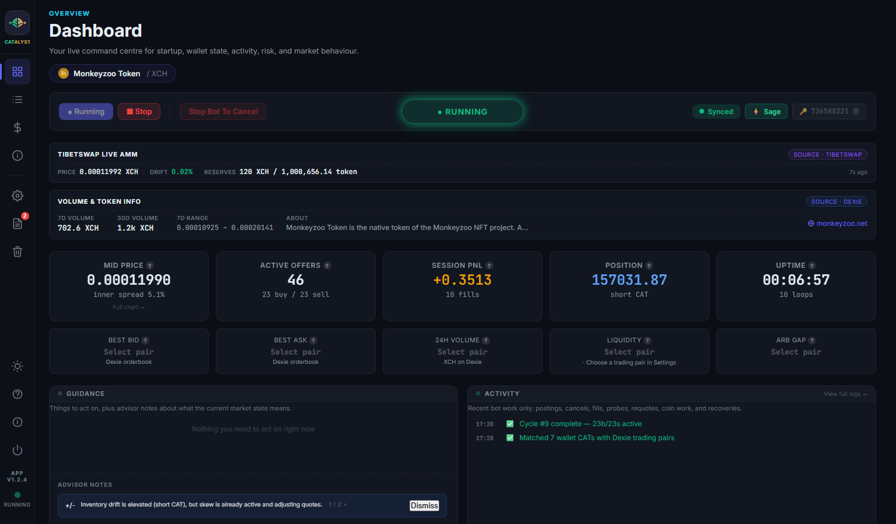
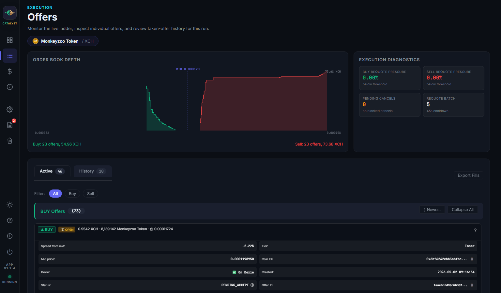
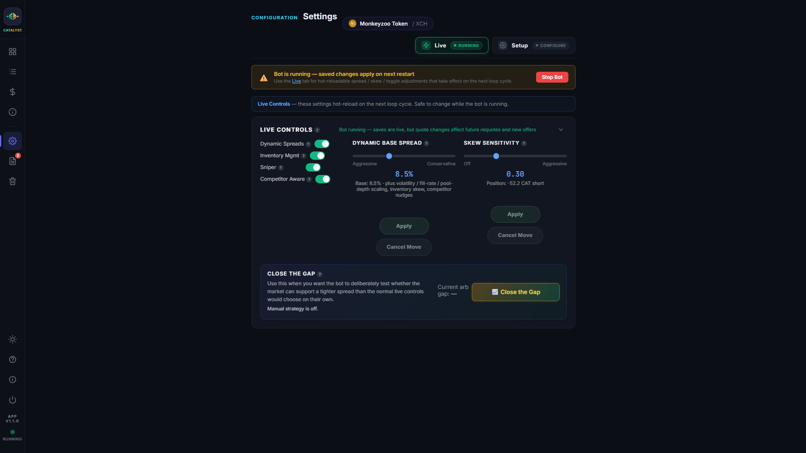
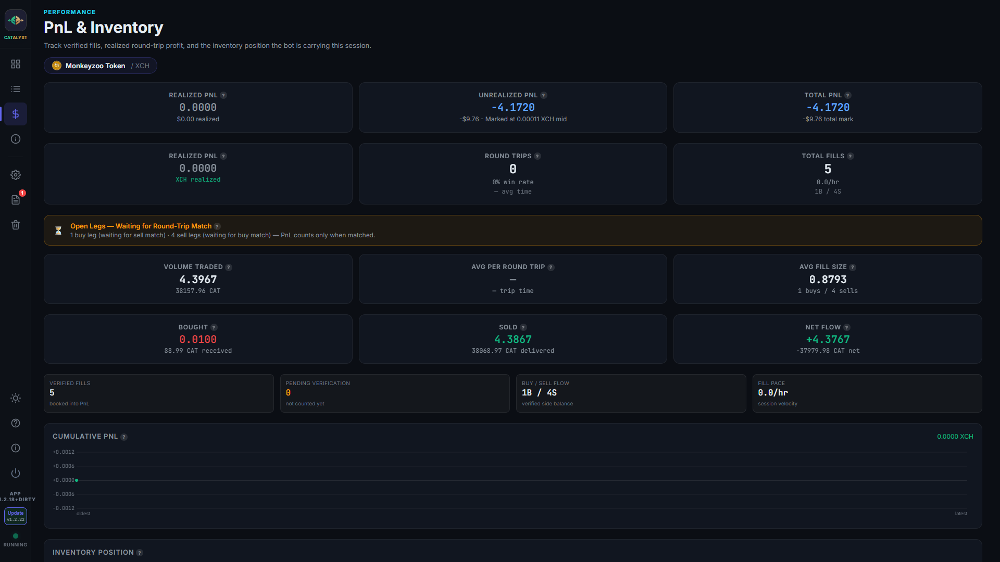
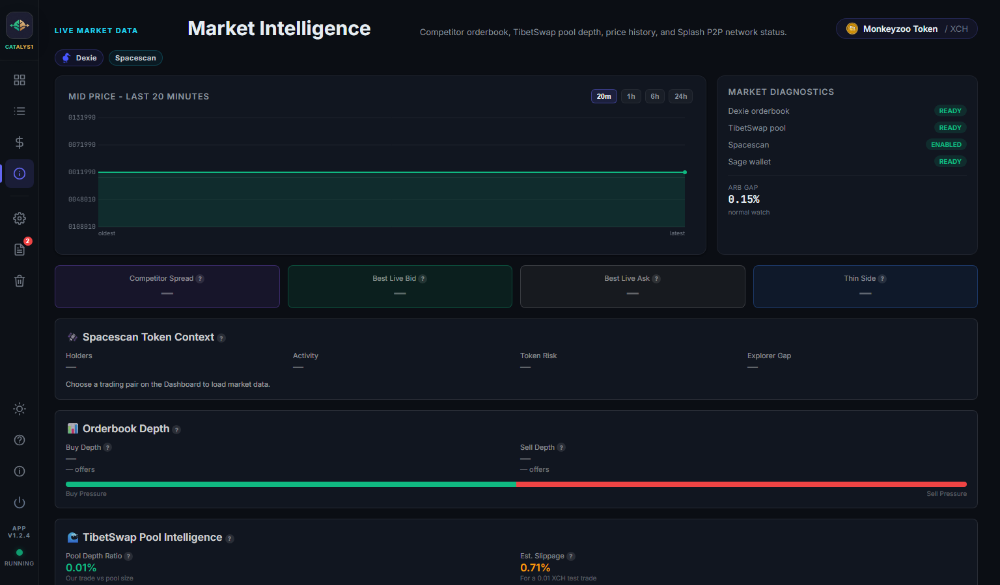
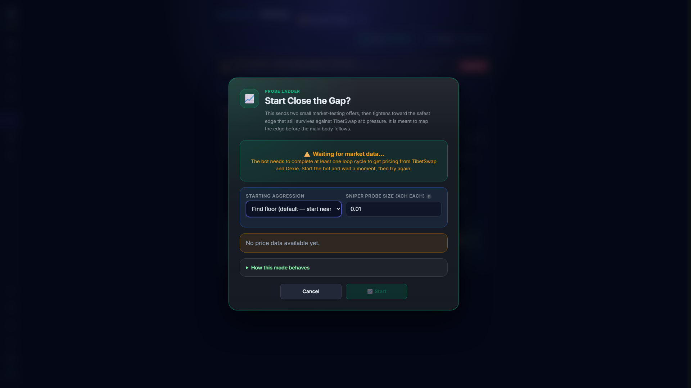
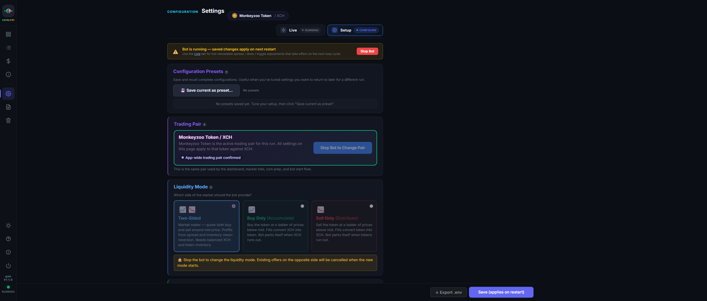

Everything you need to run CATalyst.
CATalyst is a beta desktop market-making app for Chia CATs. This guide walks through the current app screens, setup flow, wallet requirements, safety controls, and troubleshooting notes for early testers.
What is CATalyst?
CATalyst is an automated market maker for Chia blockchain CAT tokens. It runs locally on your computer, connects to Sage Wallet over RPC, builds a buy/sell ladder around a live reference price, and posts offers to Dexie with optional Splash P2P broadcasting.
How it works, the cycle
The bot runs a complete cycle every loop interval, with the current default set to 90 seconds. Background watchers keep the app responsive between cycles: the price watcher polls TibetSwap for swaps, the AMM monitor tracks Tibet pool reserve drift, and the mempool watcher checks Coinset for pending spends on the Tibet pool coin and coins locked by your live offers. These signals can wake the main loop early, so fills and price shifts are usually handled faster than the base loop interval.
Each cycle runs these steps:
- Fetch prices from Dexie and TibetSwap to find the current mid-price
- Check health. Is the wallet reachable and ready? Any circuit breakers active?
- Detect fills. Reconcile wallet state, known offer coins, Dexie status, and chain data where needed
- Match PnL. Pair up buy fills with sell fills to calculate profit
- Update inventory. Track net position (are we accumulating CAT or XCH?)
- Score adverse selection. Track buy-side and sell-side pressure separately so repeated sweeps, thin depth, or one-sided flow can widen or pause the affected side
- Clean expired offers and pre-emptively refresh any expiring within 5 minutes
- Fire sniper if there's an arb opportunity between Dexie and TibetSwap
- Emergency requote if a price shock is detected (large sudden arb gap)
- Regular requote if the price has drifted beyond the threshold
- Create new offers with tiered sizing and inventory-skewed spreads
- Post to Dexie and optionally broadcast to Splash P2P for visibility
- Check coins. Adaptive topup based on trading pace (busy/normal/slow)
Ladder rebuild timing. A filled or swept ladder is not always replaced in one instant. In quiet conditions, missing offers may come back within one or two 90-second cycles. If the Adverse Selection Guard is high, a side is temporarily throttled, coin top-up is waiting for Sage/chain state, or prices are moving, CATalyst can deliberately wait several cycles before rebuilding the full ladder. That slower rebuild is a safety feature, not necessarily a fault.



Key concepts
Spread. The difference between your buy and sell price, shown as a %. Wider = safer but fewer fills. Narrower = more fills but more risk.
Inventory. Your net position. If people keep buying your CAT, you accumulate XCH (go short CAT). The bot skews spreads to rebalance.
Adverse Selection Guard. CATalyst's side-aware market toxicity score. It is closest to order-flow toxicity or VPIN-style flow-imbalance monitoring, but implemented as practical beta heuristics for Dexie/TibetSwap conditions rather than a full academic VPIN model.
Coins. Chia uses a UTXO model, each offer locks a specific coin. You need pre-split coins of the right size.
Welcome, here's how to get started.
The bot is designed to work out of the box once Sage is running. Windows releases are either independently signature-verified or explicitly labelled as unsigned beta builds with a visible SmartScreen warning. Linux packages use the website's official public GitHub release links. Mac users can run from the GitHub source repo; a signed/notarized Mac installer or DMG is not currently published.
Unsigned beta - expect a Windows SmartScreen warning
Code signing policy · Privacy policy
- This update installs an intentionally unsigned Windows beta. Microsoft SmartScreen may show the normal blue warning. Verify the SHA-256 sidecar before choosing More info and Run anyway.
- The installer has no Authenticode publisher signature; only this update manifest is cryptographically signed.
- Replaces the withheld v1.3.18 Windows installer after the actual browser download was quarantined by Microsoft Defender as Trojan:Win32/Wacatac.B!ml only when carrying Internet-origin context.
- Uses non-solid ZIP compression for the Inno Setup wrapper. Both the unchanged-payload diagnostic probe and the exact v1.3.19 installer downloaded publicly with ZoneId=3, matched their SHA-256 checksums, and produced no Defender detection.
- Install CATalyst. Use the website download for Windows or Linux. Windows uses an installer and Linux offers AppImage/deb packages. Mac users should use the GitHub source repo for now; no signed/notarized Mac installer or DMG is currently published.
- Make sure Sage is running. Open Sage Wallet and enable RPC in Sage Settings -> Advanced. CATalyst talks to Sage on port 9257.
- Select a signing wallet. Use a normal signing fingerprint, not a watch-only key, so the app can create, cancel, and replace offers.
- Pick your trading pair. Use Quick Start on the dashboard to choose the CAT token you want to trade against XCH.
- Run Smart Settings. Review spread, trade sizes, reserves, tiers, and safety limits before going live.
- Prepare your coins. Split your wallet balance into the right coin sizes for your ladder.
- Start the bot. The app creates offers, watches fills, updates inventory, and manages requotes automatically.
Tips for beginners
Start small. Use small trade sizes while you're learning. You can always increase them later in Settings.
Everything is in Settings. All normal app configuration is done through the Settings screen. No manual file editing should be needed for day-to-day use.
Live vs Setup. Settings has two sub-tabs. Live holds the hot-reloadable tweaks (spread slider, skew, feature toggles) and is safe to touch while the bot is running. Setup holds the full configuration; saved changes apply on next restart when the bot is live.
Guidance + Activity. Once running, the two panels below the info cards show what to act on (Guidance) and what the bot is doing right now (Activity). Anything with a button goes to Guidance; informational notes sit below the same card.
Command Centre. The three-panel summary further down shows your settings, market health, and wallet performance at a glance. Hover over any ? icon for an explanation.
Developers welcome. CATalyst is public, and improvements should go through the bot repository. Packaging help for Linux, Mac source setup, wallet safety reviews, tests, docs, and UI fixes are especially useful during beta.
Dashboard, your live command centre.

Top-to-bottom order is tuned so bot state and market context are visible without scrolling:
- Token pill. The active CAT / XCH pair.
- Running bar. Start / Stop / Cancel All on the left, status badge in the middle, Sync indicator + wallet badge + fingerprint on the right.
- TibetSwap Live AMM. Labelled strip showing live pool price, drift from your mid, reserves, and freshness. Source chip reads Source · TibetSwap.
- Volume & Token Info. 7d / 30d volume, 7d range, description, and website link. Source chip reads Source · Dexie. While data is loading, a "Gathering…" placeholder shows instead of an empty row.
- 10 info cards (5×2 symmetric grid), Mid Price, Active Offers, Session PnL, Position, Uptime, Best Bid, Best Ask, 24h Volume, Liquidity, Arb Gap.
- Guidance + Activity row. Two equal-width panels side by side (see below).
- Market Health / Command Centre. The three-column summary of your settings, market health metrics, and wallet performance. Sits just below the fold on 1080p windows so you see the top of it without scrolling.
Guidance panel (left of Activity)
One merged card replaces the old separate Recommendations and Advisor panels. It has two sections, divided by a subtle dashed line:
- Actions (top), everything you can act on with one click: circuit-breaker tripped, wallet sync stale, Restart Sage, Tighten to X%, Widen to X%, Enable Inventory Mgmt, Allocate deposit, etc.
- Advisor notes (bottom), context that explains what the current state means: quiet token, wide arb gap, price-gap sanity warnings. Tips that depend on the Spacescan 24h cache automatically hide themselves when the cache is stale.
Dedup logic ensures each concern surfaces once: if a backend alert has raised circuit_breaker, the advisor won't push a duplicate tip about the same breaker.
Activity feed (right of Guidance)
Rolling 5-line feed of recent bot work, postings, cancels, fills, probes, requotes, coin work, recoveries. New events flow in at the top with a timestamp; older events drop off the bottom. No scrollbar; the full history lives in the Logs tab.
Command Centre metrics
- Active Settings (left), Read-only view of your current trading, spread, inventory, tier, and safety settings.
- Market Health (centre), Traffic light + five metrics: your spread, market spread, competitors, arb gap, pool depth.
- Wallet & Performance (right), Sage balances, coin breakdown, reserves, and session uptime / fills / PnL / errors.
Where did Live Controls go?
Live Controls (Dynamic Spreads, Inventory Mgmt, Sniper, Competitor Aware toggles + Base Spread / Skew sliders + Close the Gap) moved to Settings → Live tab. Click Settings in the left sidebar while the bot is running and the Live sub-tab auto-opens.
Offers & Fills

Understanding offers
The bot creates buy offers (offering XCH, requesting CAT) and sell offers (offering CAT, requesting XCH) around the current mid-price.
Active Offers tab
Shows all currently open offers with: side (buy/sell), price, size, tier, time remaining until expiry, and Dexie link.
Tiers. If tiered sizing is enabled, offers are placed at different distances from mid-price: Inner (closest, largest), Mid, Outer, Extreme (furthest, smallest).
How fills work
When someone takes your offer on Dexie, that's a "fill". The bot detects fills by comparing offers before and after each cycle.
History tab
Shows completed fills with: side, price, size, timestamp, and whether it was matched into a round-trip trade.
Spreads & Pricing
How pricing works
The bot builds live executable pricing from the two venues it can actually trade against:
- Dexie. The current orderbook and ticker context
- TibetSwap. The pool-implied price and slippage context
The mid-price and arb gap come from Dexie and TibetSwap because those are the executable market venues. Spacescan is not used as a direct live price source; instead it supports on-chain verification, balance checks, and token-health context where available.
Dynamic spreads
When enabled, the spread adjusts automatically based on:
- Volatility. More volatile = wider spread (self-protection)
- Arb gap. Large gap = wider spread (don't get picked off)
- Fill rate. Too many fills = wider spread; too few = tighter
- Pool depth. Shallow TibetSwap pool = wider spread (more slippage risk)
- Competitors. If Competitor Awareness is enabled, pricing also nudges based on what other market makers are doing on Dexie
- Adverse selection. Sweep-like or one-sided flow raises a side-specific toxicity score, then widens or temporarily pauses the risky side while the correcting side can keep working
Spread settings
Base Spread. Starting point as a percentage for the dynamic engine, not a minor "aggression" trim. Inner Edge. Where your closest offers start (the ladder begins here and widens to the full spread). Min/Max Spread. Hard limits the dynamic engine can't exceed. Turning Dynamic Spreads off disables the volatility/fill-rate/pool-depth engine, but inventory skew and competitor nudges can still move quotes if those features stay on.

Inventory & PnL

Inventory tracking
The bot tracks your net position. How much CAT you've accumulated (or sold) relative to where you started.
- Long CAT. You've bought more CAT than sold. Bot widens buy spread, tightens sell (encourages selling).
- Short CAT. You've sold more CAT than bought. Bot tightens buy spread, widens sell (encourages buying).
- Balanced. Roughly equal. Spreads are symmetric.
Skew Intensity controls how aggressively spreads skew (0 = off, 1 = aggressive). You can set this in Settings → Live.
PnL (Profit & Loss)
Realised PnL: Profit from completed round-trips (matched buy + sell). This is actual locked-in profit.
Round-trip matching: Pairs buys with sells of similar size (within 20%). The difference is your spread capture. Fills that differ in size by more than 20% are left unmatched, they represent one-directional inventory movement, not a completed trade.
Unmatched fills: The amber panel on the PnL tab shows any "open legs", fills waiting for a partner. This is why PnL can show zero even when you have fills. It will update once a matching fill comes in from the opposite side.
PnL tab statistics: Along with realised PnL and round trips, the tab shows: total XCH + CAT volume traded, average profit per round trip, average fill size, buy/sell fill count split, and average time between buy and sell legs.
Coin Management
Why coins matter
Chia's UTXO model means every offer locks a specific coin. If you have one big coin, you can only make one offer. The bot needs many pre-split coins of the right size.
Coin preparation
Click "Prepare Coins" to split your wallet into offer-sized coins. This:
- Calculates how many XCH and CAT coins you need based on your tier sizes
- Finds your largest coin and splits it using blockchain transactions
- Waits for confirmations (~60 seconds)
- Leaves a reserve coin for future expansion
Adaptive live topup
While running, the bot monitors coin counts and tops up automatically based on trading pace:
- Busy (many fills/hour), tops up when spare coins drop below 50%
- Normal. Tops up at 30% spare coins
- Slow (few fills/hour), tops up at 20% spare coins
Coin health in the dashboard
The Wallet & Performance panel shows Free, Locked, and Total coin counts for both XCH and CAT. The bot also tracks locked XCH and CAT values to show how much capital is committed to open offers.
Market Intelligence

The Market Intel tab provides ecosystem awareness for the live CAT pair. Today it is driven mainly by the Dexie orderbook and TibetSwap pool context, with Spacescan supporting the app's wider on-chain verification and token-health analysis.
Competitor monitoring
When Competitor Aware is enabled, the bot scans the Dexie orderbook for other market makers and adjusts your spread:
- If competitors are wider. You can safely widen too (captures 25% of the gap)
- If competitors are tighter. You tighten to stay competitive (30% of the gap)
- If one side is thin (few offers), bonus spread on that side
TibetSwap pool depth
Shows the ratio of your trade size to the TibetSwap pool. If your trade is large relative to the pool, the bot widens spreads to account for slippage.
Where Spacescan helps
Spacescan is used in this app as an on-chain helper rather than a live orderbook feed. It assists with fill verification, balance discrepancy checks, and token-health inputs used by Smart Settings and safety checks. It also provides the holder count shown in the Market Health panel, and the token icon displayed throughout the app. Spacescan data is cached for 24 hours due to API rate limits, it won't update every cycle.
Token icons
When you select a trading pair, the app automatically fetches the token's logo from the Dexie icon CDN and shows it next to the token name in the titlebar, pair selector, and wallet balance labels. If no icon exists for a token, the space is simply left blank, no broken images.
Splash incoming offers
If Splash listening is enabled, the Received counter in the Market Intel tab counts every inbound peer offer seen this session (cumulative). The Relevant counter shows how many of those matched your current trading pair. These numbers only reset when the bot restarts.
DBX rewards
Dexie rewards liquidity providers with DBX tokens. You're eligible when your spread is below the DBX Max Spread threshold (default 5%). Check the Market Intel tab for your eligibility status.
Offer broadcasting
Your offers can be posted to multiple platforms for wider visibility:
- Dexie. Always on. The primary exchange where your offers are posted.
- Splash P2P. Optional. A decentralised peer-to-peer network that broadcasts offers directly to other nodes. Runs a lightweight background process on your machine.
Enable these in Settings under the Features section.
Arb Sniper
The sniper module watches for arbitrage opportunities between Dexie and TibetSwap.
How it works
When the arb gap (price difference between Dexie and TibetSwap) exceeds the configured threshold, the sniper fires a small probe pair to test the edge before deploying the main book.
- Probe-first. Fires a small pair (one buy + one sell) at the safe edge. If both probes survive on the book, the safe edge is confirmed and the main ladder follows behind. If one is filled, the bot widens that side's buffer and retries.
- Inventory-aware. Won't probe in the direction that worsens your position
- 30-second cooldown (configurable via SNIPER_COOLDOWN_SECS)
- Max 2 active probes. At most one buy + one sell at any time
- Direct Dexie post. Bypasses the normal queue for speed
- Dedicated coin pool. Uses pre-split sniper coins (SNIPER_PREP_COUNT in settings) so it never starves the main ladder
Fast response
The background price watcher checks TibetSwap every 12 seconds. When it detects a swap, it wakes the main loop immediately, so the sniper can fire within seconds of an opportunity appearing, not minutes.
Sniper stats
The dashboard shows: attempts, successes, last gap detected, and total profit from snipes.
Close the Gap

This feature gradually tightens your spread to find the best price you can safely offer, like slowly turning up a dial to see how far you can go.
How it works
- Creates a small pair of "probe" offers (buy + sell) starting at a wide spread
- Every 60 seconds, it tightens the spread by 10%
- If someone arbs the offers (fills both sides quickly), it backs off, the spread was too tight
- The tightest safe spread becomes the "floor", it won't go below the arb gap plus a safety buffer
- When it reaches the floor, it plants a real inner-tier offer at the proven price and swaps out the furthest inner offer
- The rest of the ladder catches up naturally via the incremental reaction strategy
The arb floor
The gap closer uses the current arb gap between Dexie and TibetSwap as an intelligent floor. It will never tighten your spread below the arb gap + a safety buffer (default 0.2%), because that would let arbitrageurs pick you off.
Floor handoff
When the floor is found and proven stable, the gap closer creates a real inner-tier offer at that price and cancels the furthest existing inner offer, swapping old for new. The main book then converges naturally over time.
Using it
Open Settings → Live and use the "Close the Gap" control there. You can set the aggression level (how wide to start). The control shows the current gap-closer spread while active. Stop it any time by clicking again.
Sage Wallet
Wallet connection
This desktop app is built around Sage Wallet only. The live startup flow, health checks, signing checks, and wallet guidance all assume Sage is the active wallet.
Sage Wallet
- A lightweight wallet, no full node required
- Connects via RPC on port 9257
- Much faster sync (minutes, not hours)
- Supports advanced features like coin ID selection for faster offer creation
- Make sure Sage is open and the RPC server is enabled in Settings → Advanced
- Use a signing wallet, not a watch-only key, if you want the bot to create, cancel, and replace offers
Troubleshooting
If the bot can't detect your wallet, make sure the wallet app is open. The sync indicator in the top-left will turn green when the wallet is connected. For Sage: ensure the RPC server is enabled in Sage's Settings → Advanced.
Config Guide

Key settings explained
| Setting | What it does |
|---|---|
| Spread % | Your spread as a percentage. Higher = safer but fewer fills. |
| Max Offers | How many buy + sell offers to maintain. More offers = better coverage but needs more coins. |
| Trade Size | XCH amount per offer (or per tier if tiered sizing is on). Larger = more capital at risk per trade. |
| Offer Expiry | How long offers live before auto-expiring (in minutes). The bot pre-emptively refreshes offers within 5 min of expiring. |
| Dynamic Spread | Enable automatic spread adjustment based on volatility, arb gap, fill rate, pool depth, competitors, and adverse-selection pressure. |
| Adverse Selection Guard | Side-aware toxicity control. Scores buy and sell flow separately using sweeps, one-sided fills, thin public depth, and book imbalance; widens or temporarily pauses the affected side. |
| Inventory Mgmt | Track net position and skew spreads to rebalance. Prevents accumulating too much of one side. |
| Tiered Orders | Place tiered offers at different distances from mid-price. Inner (nearest) = largest, Extreme (furthest) = smallest. |
| Max Position | Circuit breaker limit in XCH. If position exceeds this, the bot stops one side until it rebalances. |
| Sniper | Fires targeted offers when the arb gap between Dexie and TibetSwap is large enough to capture. |
| Competitor Aware | Scans the Dexie orderbook and adjusts your spread based on what other market makers are doing. |
| Splash P2P | Broadcast offers to a decentralised peer-to-peer network for wider visibility beyond Dexie. |
| Reserves | Minimum XCH and CAT held back from trading. Protects against going to zero. |
Live vs Setup sub-tabs
The Settings view has two sub-tabs. Pick the one that matches what you need to change:
- Live. Safe while the bot is running. Hot-reloads on the next loop cycle. Contains: Dynamic Spreads toggle, Inventory Mgmt toggle, Sniper toggle, Competitor Aware toggle, Base Spread slider, Skew Sensitivity slider, Close the Gap button. Auto-selected when the bot is running.
- Setup. Full configuration (trading pair, reserves, tier sizes, safety limits, ladder shape, coin-prep, etc). Saves persist across runs. If you save Setup changes while the bot is running, they apply on next restart, an amber banner at the top of the tab reminds you, and the Save button relabels to "Save (applies on restart)".
Click Settings in the left sidebar to open this view. Dashboard no longer hosts Live Controls, they live in Settings → Live.
Troubleshooting
Common issues
Sync indicator is red
Your Sage wallet is either not reachable, still warming up, or not reporting a healthy state yet. Make sure Sage is open, the RPC server is enabled in Settings → Advanced, and the selected fingerprint has finished loading.
Bot starts but no offers appear
Check: (1) the trading pair is selected, (2) coin prep has been run or existing coins are large enough, (3) the circuit breaker is not active, and (4) the active Sage wallet is not watch-only.
Offers created but not on Dexie
Check the Market Intel tab for Dexie posting stats. If there are failed posts, the bot retries automatically. Ensure your internet connection is stable.
"Not enough coins" error
Your wallet doesn't have enough pre-split coins. Click "Prepare Coins" to split your balance. Each active offer needs its own coin. The bot will also auto-topup while running.
Price shows as 0 or "N/A"
The bot cannot yet build a usable market view from Dexie and TibetSwap, or market intel is still warming up after startup. Check your internet connection and give the dashboard a little time to refresh.
Logs show RPC errors
The Sage RPC is not responding cleanly. Make sure Sage is open, the selected wallet fingerprint is loaded, and the app has not fallen into a watch-only or degraded wallet state. Restarting the app is often the quickest reset after repeated RPC timeouts.
Mass disappearance warning
The bot detected many offers vanishing at once. It requires 3 confirmations before treating them as fills (safety feature). This can happen during wallet restarts or network issues.
PnL shows zero even though I have fills
Realised PnL only counts when a buy fill and sell fill are matched into a round trip. If your fills are all on one side (e.g. two buy fills, no sells), or if the sizes differ by more than 20%, they remain as "open legs". Check the amber Unmatched Fills panel at the top of the PnL tab, it explains exactly which fills are waiting for a partner.
Dashboard shows stale data
Restart the app if a panel looks stale after an update. On startup or resume, Market Health and Advisor can take a short time to warm up while wallet and market data settle.
Market Health shows amber/red
Check the conditions listed below the traffic light. Common causes: position near circuit breaker limit, large arb gap, spread hitting the max clamp, or too many competitors. The bot adjusts automatically in most cases.
Diagnostics & support
If the app crashes or behaves unexpectedly, open the Logs tab and click Debug Bundle to download a troubleshooting zip. Debug Bundles are redacted by default: wallet addresses and Sage fingerprints are redacted; the Spacescan API key, TLS paths, .env, database files, and wallet secret files are not included. You can also grab the crash report or full data folder using View last crash report and Open data folder in Help -> Troubleshooting. During beta testing, report bugs and feedback through the public bot repo issue forms.